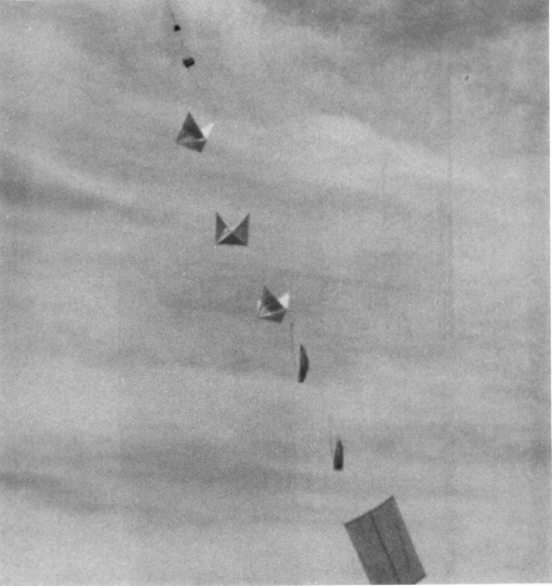

En 1994, cuarenta y siete años después del incidente, la Fuerza Aérea de los Estados Unidos publicó su investigación formal sobre Roswell. La conclusión: los restos encontrados por Brazel eran casi con total certeza parte del Proyecto Mogul, un programa de espionaje acústico altamente secreto que lanzaba cadenas de globos estratosféricos para detectar pruebas nucleares soviéticas. Uno de esos trenes de globos — posiblemente el número 4, lanzado el 4 de junio de 1947 — había caído en la zona de Corona. En 1997, el Departamento de Defensa ratificó las mismas conclusiones.
// Proyecto Mogul · Qué era y por qué importa
Inicio: 1947. Clasificación: Máximo secreto en su época.
Propósito: Detectar pruebas nucleares soviéticas mediante cadenas de globos a gran altitud equipados con micrófonos y reflectores radar.
Componentes: Paneles reflectores, estructura de madera, caucho y aluminio — exactamente los materiales descritos por Brazel y Marcel en 1947.
Por qué no se dijo antes: El propio proyecto era secreto. No podían revelar para qué servía el globo sin comprometer la misión de inteligencia.
Confirmación: El ingeniero Charles B. Moore, participante directo en Mogul, identificó los restos como consistentes con los globos del proyecto.

Las cinco teorías en competencia
Durante setenta años han surgido varias explicaciones para lo que cayó en Nuevo México aquel julio. Aquí van ordenadas por grado de respaldo académico y documental.
Proyecto Mogul
Propuesta oficial: 1994 · Fuente: USAF, GAO, ingenieros del proyecto
Globos estratosféricos secretos de espionaje nuclear. Coincidencia de materiales, fechas y ubicación. Respaldada por documentación oficial, ingenieros del proyecto y análisis forense de materiales. La explicación más aceptada por historiadores militares.
Globo meteorológico común
Versión original: 9 julio 1947 · Fuente: Gral. Ramey, USAF
La versión inmediata del ejército. Esencialmente correcta en el material pero incompleta: omitía que el globo era parte de un programa secreto. Los documentos del FBI del 8 de julio son consistentes con esta versión.
Accidentes militares posteriores
Propuesta: 1994 · Fuente: Informe USAF «Caso Cerrado»
Los relatos de «cuerpos alienígenas» corresponden a víctimas de accidentes reales de la USAF: un KC-97 en 1956 (11 muertos) y pilotos de globo heridos en 1959. Explica los rumores hospitalarios sin necesidad de alienígenas.
Nave extraterrestre
Popularizada: 1978–presente · Fuente: Ufólogos, testimonios tardíos
Un OVNI se estrellò y el gobierno recuperó cuerpos y tecnología alienígena. Apoyada únicamente en testimonios orales emitidos décadas después del evento. Ningún artefacto, ningún documento, ninguna evidencia física verificable la respalda.
Otros proyectos secretos
Versiones recientes · Fuente: Comunidades conspirativas online
Variantes que apuntan a prototipos de aviones experimentales u otros programas militares clasificados. Sin documentación verificable, sin fuentes oficiales que las mencionen.
La tabla comparativa
| Teoría | Postulada | Evidencia a favor | Evidencia en contra | Aceptación académica |
|---|---|---|---|---|
| Proyecto Mogul | 1994 (USAF) | Materiales coincidentes, documentos militares, testimonios de ingenieros | Proyecto no público en 1947, algunos detalles debatidos | Muy alta ✦ |
| Globo meteorológico | 1947 (Ramey) | Documentos del ejército, telegrama FBI, materiales compatibles | No explica la altitud ni los reflectores específicos | Alta |
| Accidentes militares | 1994 (USAF) | Registros reales de accidentes USAF (1956, 1959) | No explica los escombros del hallazgo original | Moderada |
| Nave extraterrestre | 1978–hoy | Testimonios tardíos de Marcel y otros | Cero evidencia física; relatos contradictorios; sin documentos | Mínima ✗ |
| Otros proyectos secretos | Reciente | Posible encubrimiento genérico | Sin documentos; ninguna fuente oficial los avala | Ninguna ✗ |
Lo que la evidencia dice y lo que no
El análisis documental disponible es más claro de lo que los mitos sugieren. Los ingenieros que participaron en el Proyecto Mogul identificaron los restos como consistentes con sus globos. Los únicos documentos escritos en 1947 — el telegrama del FBI, la nota de la USAF, la declaración de Brazel — describen materiales que encajan perfectamente con un globo de alta altitud. No hay discrepancias técnicas sólidas que invaliden esta explicación.
Lo que apoya los globos militares
- Documentos del FBI y USAF de julio 1947 describen materiales consistentes con globos
- Los ingenieros de Mogul confirmaron que los restos corresponden a sus globos
- Análisis forenses posteriores: materiales similares a los aeronáuticos de la época
- El informe GAO de 1995 no encontró evidencia de manipulación de registros
- La explicación encaja con las fechas y la ubicación geográfica del lanzamiento
Lo que la teoría alienígena no puede ofrecer
- Ningún artefacto físico presentado para análisis científico independiente
- Las «fotos de autopsia» de 1995 fueron desacreditadas como fraude
- Los documentos «Majestic-12» aparecieron en 1980 y se demostraron falsos
- Todos los testimonios «explosivos» son posteriores a 1978 — más de 30 años después
- Carl Sagan señaló que la conspiración Roswell se basa en hechos inconsistentes sin pruebas tangibles
«La comunidad científica y técnica no reconoce anomalías en los materiales publicados — que siempre han sido explicables como componentes de globos o equipo militar aéreo.»
— Informe USAF · Roswell Report: Fact vs. Fiction · 1997Los documentos oficiales clave
// Fuentes primarias · Archivos verificables
Telegrama FBI + Nota USAF
Los únicos registros federales contemporáneos al incidente. Ambos describen «un globo meteorológico de gran altitud con reflector radar». Accesibles vía Archivos Nacionales (NARA).
USAF — The Roswell Report: Fact vs. Fiction in the New Mexico Desert
Investigación formal encargada por el Congreso. Concluye que los restos son del Proyecto Mogul. Incluye correspondencia desclasificada de la época y testimonios de ingenieros participantes.
GAO — Results of a Search for Records Concerning the 1947 Crash Near Roswell
El informe del Gobierno revisó archivos militares y federales. No encontró evidencia de encubrimiento. Confirma el cambio de versión de «disco» a «globo meteorológico» en 24 horas.
USAF — Roswell Report: Case Closed
Reporte definitivo del Departamento de Defensa. Ratifica las conclusiones de 1994. Añade la explicación de accidentes militares posteriores para los relatos de «cuerpos».
NARA — Proyecto Libro Azul (T1206)
Los microfilms del Proyecto Libro Azul contienen el apunte oficial del caso Roswell. Disponibles en los Archivos Nacionales de EE.UU. para consulta pública.
// Comentarios